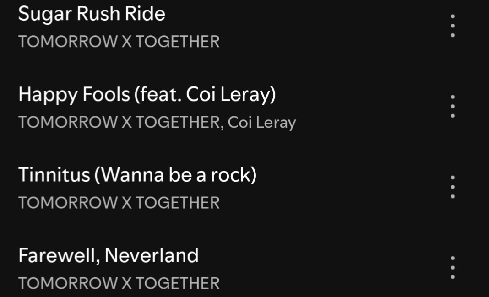

Unique sound
TXT's musical variety is one of the main reasons why their discography is considered one of the best in the fourth generation of K-pop. Each of their comebacks isn't just a new song, but an entire conceptual story told through a completely new musical genre.